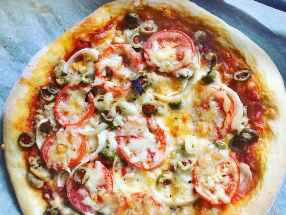

Pizza

Esta es una receta excelente cuando no quieres esperar a que la masa suba. Solo tienes que mezclarla y dejarla reposar durante 5 minutos. ¡Y ya está lista! Da como resultado una corteza suave y masticable.
Ingredientes
- 1 taza de agua tibia (110 grados F/45 grados C)
- 1 paquete (0,25 onzas) de levadura seca activa
- 1 cucharadita de azúcar blanca
- 2 ½ tazas de harina de pan
- 2 cucharadas de aceite de oliva
- 1 cucharadita de sal
Instrucciones
- Reúne todos los ingredientes. Precalienta el horno a 230 grados C (450 grados F) y engrasa ligeramente una bandeja para pizza.
- Coloque agua tibia en un recipiente; agregue la levadura y el azúcar. Mezcle y deje reposar hasta que la mezcla quede cremosa, aproximadamente 10 minutos.
- Añade harina, aceite y sal a la mezcla de levadura; bate hasta que quede una masa homogénea. Puedes hacerlo a mano o usar una batidora de pie con gancho para masa para que sea más fácil.
- Dejar reposar durante 5 minutos.
- Coloque la masa sobre una superficie ligeramente enharinada y aplanéela o estírela hasta formar un círculo de 30 cm (12 pulgadas).
- Transfiera al molde para pizza preparado.
- Unta la masa con la salsa y los aderezos de tu elección.
- Hornear en el horno precalentado hasta que esté dorado, de 15 a 20 minutos. Retirar del horno y dejar enfriar durante 5 minutos antes de servir.
Otras recetas